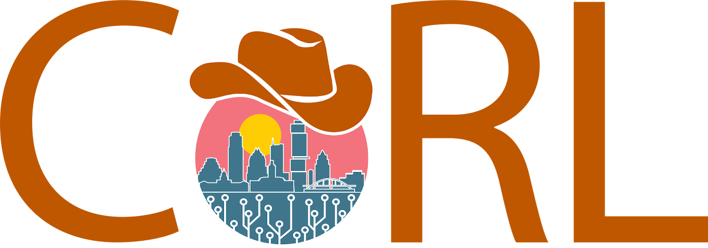
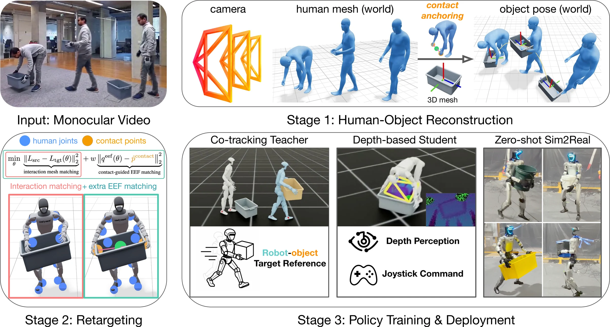

Real-to-Sim-to-Real
Counterfactual Video Generation for
Scalable Humanoid Loco-Manipulation
From one human video to a humanoid that handles objects it has never seen.

Conference on Robot Learning (CoRL 2026)1 Amazon FAR2 UC Berkeley3 Stanford University4 Carnegie Mellon University† Amazon FAR team co-leads.
A ball. A bucket. A plush dog. One learned policy.
REAL ROBOT · ZERO-SHOT TRANSFERTeaching robots to pick up different objects
Humanoids can walk. Now they need to handle everyday objects.
A useful household robot must grasp a ball, lift a bucket, and approach a box from the side. New shapes, sizes, and poses demand new movements.
People learn these adjustments through years of watching and practice. How do we give robots that experience?
01 / Everyday objects
Generalizing to unseen objects
Our policy handles these real objects without real-world fine-tuning.
- Onboard depth onlyNo MOCAP or reference motion
- AutonomousA person only steers it with a joystick.
- Trained from video aloneSim2Real
02 / The data bottleneck
Finding useful demonstrations
Show a robot how a person moves. VideoMimic turns human video into skills such as climbing and sitting. To scale this approach, we need useful demonstrations.
Motion capture
Motion capture records precise movements, but each session needs specialized equipment.
Internet video
People upload videos to entertain other people. Few show a full, unobstructed view of someone lifting an everyday object.
Record it yourself
Filming your own examples targets the skills you want. Covering more objects and scenes takes more work.
Clear hand–object contact.
A task the robot can learn.
One recording gives us a starting point. We need many variations.
03 / Our solution
Generate more interactions from one video
We start with a real demonstration. Video-to-video generation (V2V) changes the object and adapts the person’s motion.
A counterfactual video shows an interaction that didn’t happen, but could have with a different object.
We vary object shape, size, and pose, along with the human motion. Scene changes offer a future extension.
Why use video instead of text?
Text describes an event. Video shows the scene, person, and task. V2V varies the interaction; we refine the motion for physical feasibility.
Our seed recordings yield 256 counterfactual videos for training.
04 / Look a little closer
Which video is real?
We recorded one clip and generated three. Pick the real one.
Watch the hands and body. New objects change how the person reaches, grasps, and carries. These changes give the robot new examples to learn from.
See how the interaction changes
Choose an object to compare its generated motion with the real recording.
05 / From video to robot
Turn videos into robot skills
We reconstruct each video in 3D, adapt the motion to the robot, and train in simulation. Generation and reconstruction can introduce errors, so we refine the trajectories for physical feasibility.
We preserve contact throughout: where the hands hold the object and how they move together.
- 01
Reconstruct the interaction
Recover the person, object, and scene in one 3D frame. Contact anchors keep their motion consistent through occlusions.
- 02
Retarget to the humanoid
Adapt the motion to the robot’s body. Preserve hand–object contacts and enforce physical constraints.
- 03
Learn in simulation
Train a teacher to track robot and object motion. Distill its behavior into one policy that uses onboard depth.
- 04
Transfer to the real world
Deploy without real-world fine-tuning. The robot picks up, carries, and drops unfamiliar objects while a person supplies steering commands.

BibTeX
@inproceedings{wang2026counterfactual,
title = {Counterfactual Video Generation for Humanoid Loco-Manipulation},
author = {Wang, Zihan and Wu, Zhen and Abbeel, Pieter and Duan, Rocky and Malik, Jitendra and Sferrazza, Carmelo and Liu, Karen and Shi, Guanya and Kanazawa, Angjoo},
booktitle = {RSS 2026 Workshop Whole-body Control and Bimanual Manipulation: Applications in Humanoids and Beyond}
}
Acknowledgements
We thank Qitao Zhao, Yen-Jen Wang, Sirui Chen, Jiashun Wang, Jacob Berg, JC Hu, Charlie Cheng, and our colleagues at Amazon FAR for their support and feedback. Video-to-video generation builds on Seedance 2.0, and human–object reconstruction builds on CRISP.